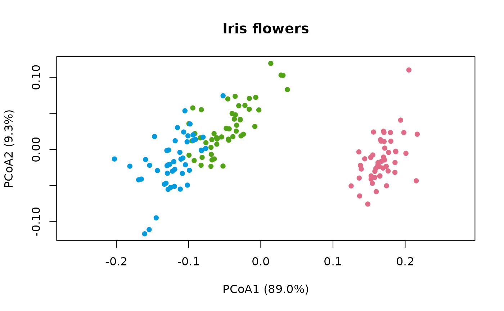

ecodive's distance matrices, ordinations and tests carry one attribute
for ecodive's own plot() and print(): display, a list holding
title, the title that plot() gives the result unless main is
given, and for a distance matrix made with clust, the clustering
method clust, which plot() keeps and names in its subtitle.
Details
A title is the method's name, then " of " and the title of the result it was computed from, when that has one:
Distance matrices: the metric's name, as
list_metrics()gives it, such as"Bray-Curtis Dissimilarity".Ordinations: the method's name, as
list_dist_ords()andlist_count_ords()give it, and for an ordination of distances, the distance matrix's title:"Principal Coordinates Analysis of Bray-Curtis Dissimilarity".Permutation tests: the test's name and the distance matrix's title; for
mantel(), both matrices' titles when both have one.print()shows it as the heading.envfit(): "Fitted variables on" and the ordination's title.
Results don't record how they were made: neither the arguments they were made with, nor earlier steps, such as normalizing, rarefying or transforming the counts, which return plain tables. A title names only what ecodive knows to be true of the result.
Arithmetic on a distance matrix, such as sqrt(d) or 1 - d, gives new
values, so the result loses its title and its method attribute (the
metric's ID), and plots as "Distances"; it keeps clust and order.
To title a result yourself, set attr(x, "display")$title, or give
plot() a main.
A result's other attributes are results in their own right, such as an
ordination's eig, or tell other functions how to read it, such as a
distance matrix's method and, with clust, order. Each function's
page describes them.
Examples
d <- bray(iris[, 1:4])
ord <- pcoa(d)
ord
#> # A matrix: 150 samples × 3 axes
#> # Principal Coordinates Analysis of Bray-Curtis Dissimilarity
#> # % of variance: 89.0, 9.3, 2.9
#> PCoA1 PCoA2 PCoA3
#> 1 0.169 -0.0259 -0.00505
#> 2 0.171 0.0235 0.0308
#> 3 0.187 -0.0032 0.0322
#> 4 0.18 0.0113 0.0372
#> 5 0.176 -0.03 -0.00613
#> 6 0.136 -0.0398 -0.0431
#> 7 0.186 -0.0182 0.0156
#> 8 0.167 -0.0165 0.00287
#> 9 0.194 0.0406 0.0413
#> 10 0.171 0.011 0.0286
#> # … 140 more samples
#> # Use print(x, n = ...) to see more samples
#> # Attributes: method, eig, prop, trace, correction, constant
attr(ord, 'display')$title
#> [1] "Principal Coordinates Analysis of Bray-Curtis Dissimilarity"
# Arithmetic drops the title.
attr(sqrt(d), 'display')$title
#> NULL
# Your own title.
attr(ord, 'display')$title <- 'Iris flowers'
plot(ord, 'Species', iris)
